TONELADAS DE ALIMENTOS SÃO DESPERDIÇADOS POR ANO NO BRASIL
DE BRASILEIROS ESTÃO EM SITUAÇÃO DE INSEGURANÇA ALIMENTAR
DE COMIDA SÃO DESPERDIÇADOS POR CADA BRASILEIRO POR ANO
Dados do relatório FAO de 2021 e Rede Brasileira de Pesquisa em Soberania e Segurança Alimentar e Nutricional (Rede PENSSAN)
| ARROZ | 0 |  ACÚÇAR ACÚÇAR |
0 |
| LEITE | 0 | BISCOITO | 0 |
| FEIJÃO | 0 | CAFÉ | 0 |
| MASSA | 0 | ÁGUA | 0 |
| ÓLEO | 0 | PÃO | 0 |
| FARINHA | 0 | IOGURTE | 0 |
| TOTAL: 0 | |||
A ONG Banco de Alimentos atua desde 1998 auxiliando pessoas em situação de insegurança alimentar através do combate ao desperdício de alimentos. Mas você sabe o que significa insegurança alimentar?
Estado de insegurança alimentar é quando não há a garantia de que teremos o que comer na próxima refeição. Uma situação inaceitável especialmente aqui no Brasil, que bate recordes no agronegócio e desperdiçou 23,6 milhões de toneladas de alimentos em 2019.
Faça sua doação para a ONG Banco de Alimentos e colabore com nosso trabalho no combate ao desperdício de alimentos.
Hoje, através das 65 entidades sociais parceiras, ajudamos a complementar a refeição de mais de 38 mil pessoas de forma digna e nutritiva, em lugares onde muitos são esquecidos.


Nosso processo de distribuição envolve a coleta de alimentos, seu armazenamento seguro e a entrega direta às famílias em necessidade, garantindo que cada doação faça uma diferença significativa.

Para fazer uma doação, é fácil: selecione os alimentos que deseja contribuir através do nosso processo online e conclua a doação de forma segura e conveniente.